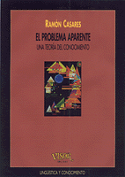

|  |
Título: El problema aparente Autor: Ramón Casares (1999) Editorial: Machado Libros (antes Visor Distribuciones) Colección Lingüística y Conocimiento 27 ISBN-10: 84-7774-877-2; ISBN-13: 978-84-7774-877-9 |
Pulsa aquí para volver a la página principal
Pulsando cómprame irás a una página en donde podrás comprar una copia en papel de "El problema aparente" por menos de 10€.
Las fuentes se encuentran en GitHub.
El problema aparente es una reelaboración en forma de ensayo de mi prolongada tesis doctoral. La tesis fue dirigida por el Profesor Fernando Sáez Vacas, de la Universidad Politécnica de Madrid, y fue defendida el día 11 de mayo de 1993 ante un tribunal compuesto por los Profesores Gregorio Fernández (Universidad Politécnica de Madrid), Miguel Ángel Quintanilla (Universidad de Salamanca), José Cuena (Universidad Politécnica de Madrid), Ángel Rivière (Universidad Autónoma de Madrid) y Carlos Delgado Kloos (Universidad Politécnica de Madrid), que le concedieron por unanimidad la máxima calificación, apto cum laude.
El problema aparente presenta una teoría del conocimiento modelada matemáticamente, de manera que sus conceptos son precisos y sus consecuencias verificables. Pretende, por tanto, sentar las bases de una epistemología científica. La introducción, que intenta facilitar el entendimiento de la teoría y la lectura del libro, incluye una sinopsis (a partir de la página 80) que resume el contenido.
El problema aparente sostiene i) que el simbolismo es un sistema extensible de convenciones que sirve para resolver problemas porque permite la expresión de problemas, soluciones y resoluciones, y ii) que el simbolismo fue diseñado por la evolución darwiniana porque la vida es un problema aparente y porque el simbolismo proporciona, de una sola vez, la resolución de problemas, la consciencia, el lenguaje y la libertad. De aquí se sigue que el simbolismo está vacío de significados y que son los problemas los que aportan los significados. La teoría es subjetivista porque es el sujeto simbólico quien da significado al objeto. Pero como saber es un medio, el fin es vivir, y el sujeto individual es una parte de la vida, resulta que de donde el individuo toma los significados últimos es de la vida, por lo que todos los seres vivos disponen de una fuente común de significados que hace posible la comunicación.
El problema aparente trata del saber, por lo que se sitúa en el cruce de todos los saberes específicos y, en consecuencia, puede ser atacado desde muy diferentes posiciones. Algunas de las disciplinas que se ven afectadas, en mayor o menor grado, por esta epistemología de carácter subjetivista son: ética, filosofía, epistemología, lingüística, lógica, matemáticas, informática, inteligencia artificial, psicología, neurología y biología.
El problema aparente responde, entre otras, a
las siguientes cuestiones:
¿Hay diferencia entre adaptación y aprendizaje?
¿Qué maneras hay de resolver un problema?
¿Hay diferencia entre saber y conocimiento?
¿Cuál es el último reducto del absolutismo?
¿Hay diferencia entre solución y resolución?
¿Qué razón evolutiva tiene el simbolismo?
¿Se pueden pensar varias cosas a la vez?
¿Qué conceptos son transcendentes?
¿Cómo es posible la comunicación?
¿Se puede fabricar una persona?
¿Cuál es el problema aparente?
¿Para qué sirve la consciencia?
¿Es mi cuerpo parte de mi yo?
¿Son peligrosas las paradojas?
¿Sabe sumar una calculadora?
¿Es inteligente un ordenador?
¿Qué es un comportamiento?
¿Por qué sufrimos ilusiones?
¿Qué niega el materialismo?
¿Para qué sirve la sintaxis?
¿Puede ser feliz un perro?
Esta frase es falsa, ¿lo es?
¿Para qué sirve la lógica?
¿Qué significa significa?
¿Qué es la abstracción?
¿Qué es un problema?
¿Soy yo una persona?
¿Qué es la felicidad?
¿Puedo yo ser libre?
¿Qué es la libertad?
¿Explica la ciencia?
¿Por qué morimos?
¿Piensa un perro?
¿Qué es un vaso?
¿Qué es la vida?
¿Qué soy yo?
¿Qué soy yo? Yo soy libertad para no morir. La transposición positiva, yo soy libertad para vivir, no es completamente equivalente, porque esconde la tensión que encierra el yo. Esta tensión sólo se muestra cuando me percato de la finitud de la vida, finitud que la muerte evoca inmediatamente. [página 75]
Última actualización: 2014.03.03.
© Ramón Casares 2000-2014